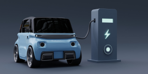

Keunggulan Hidrogen

Ramah Lingkungan
Hidrogen menghasilkan air sebagai satu-satunya produk sampingan saat digunakan dalam sel bahan bakar.
Sumber Energi Melimpah
Hidrogen dapat diekstraksi dari air melalui proses elektrolisis.

Aplikasi Luas
Dapat digunakan dalam transportasi, penyimpanan energi, dan pembangkit listrik.